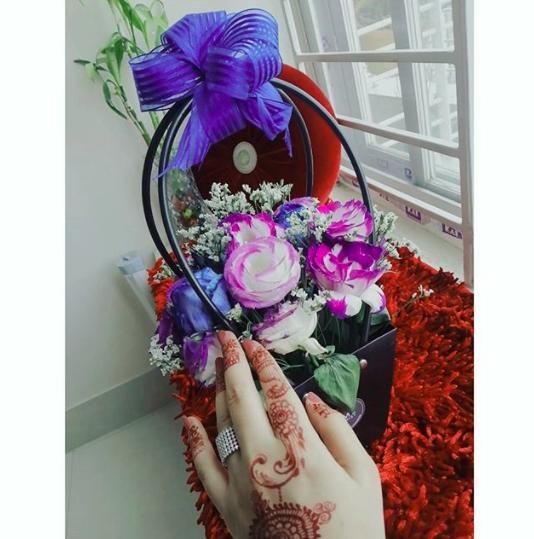
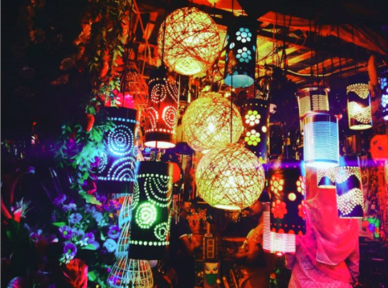
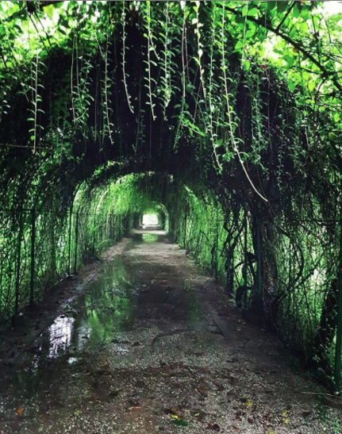
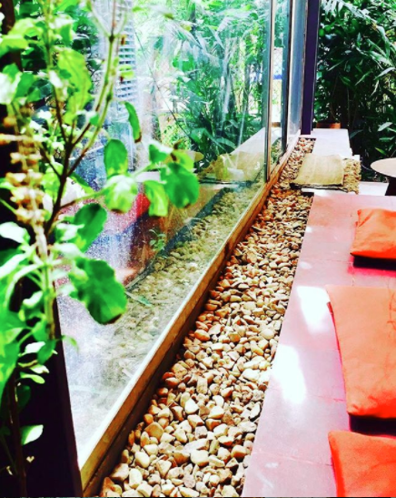

Love for Flowers
As I believe that Flowers are a gift to this earth. As Gerard De Nerval once said, “Every flower is a soul blossoming in nature.” They paint contrasting colors along the ground and bring joy to many. Their elegance and delicate touches have us all in awe and exhilaration. This is often why flowers are seen as loving gifts for the special people in our lives, and the reaction of the person receiving the flowers is priceless.
Love for Colours
Color creates, enhances, changes, reveals and establishes the mood of the painting. The chief function of color should be to serve expression of happiness for me.
Love for Nature Photography
I trust that Look deep into nature, and then you will understand everything better.” Adopt the pace of nature: her secret is patience.” “How glorious a greeting the sun gives the mountains!” “Keep your love of nature, for that is the true way to understand art more and more..
Love for Gardening
My garden is my most beautiful masterpiece. Gardening is how I relax. It’s another form of creating and playing with colors. I grow plants for many reasons: to please my eye or to please my soul, to challenge the elements or to challenge my patience, for novelty or for nostalgia, but mostly for the joy in seeing them grow. I like gardening. It’s a place where I find myself when I need to lose myself.